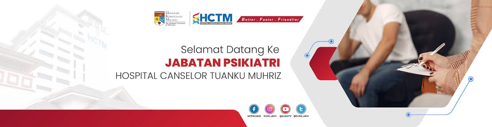
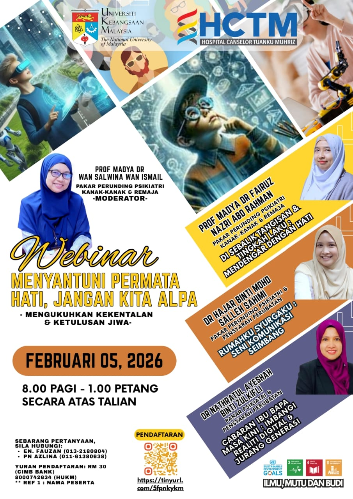
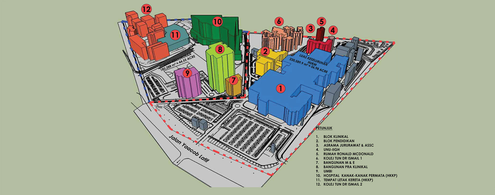

Learn
Read about neurodivergence, traits, approaches, and support in clear sections.


A welcoming place to begin
In association with the Medication and Rehabilitation Education of:
Our purpose
Our department aims to promote understanding of neurodivergence, reduce stigma, and share information about support. We recognise that each person and family has their own experiences, strengths, and needs.
Explore the information
Read about neurodivergence, traits, approaches, and support in clear sections.
Learn about the people and services connected with the Psychiatric Faculty.
Explore the information on this site at a pace and in a way that feels comfortable to you.
Department activity

Staff activity highlight
Department activities can bring staff and the community together to learn, share experience, and build understanding.
This is a static event highlight. Replace the poster and description when you have a newer department activity to display.
Visit us

Located in
Hospital Canselor Tuanku Muhriz UKM
Address and contact details are listed on the official HCTM contact page .